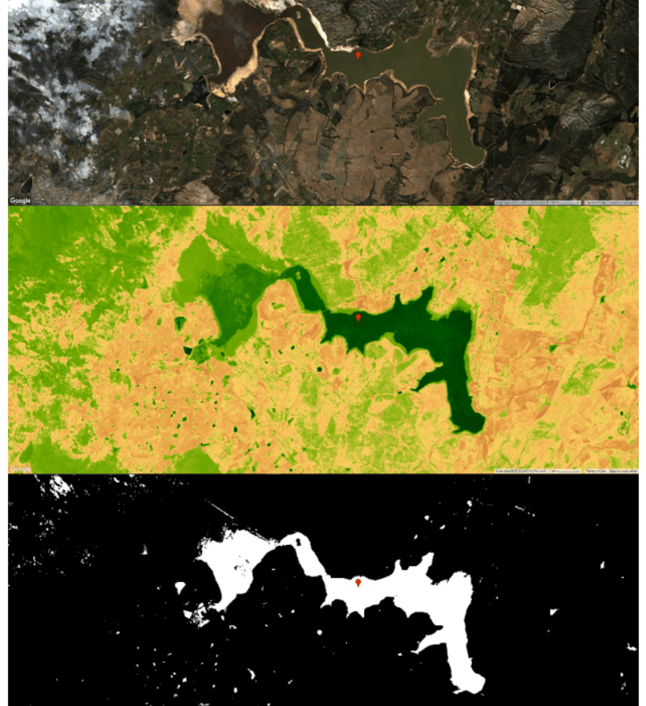
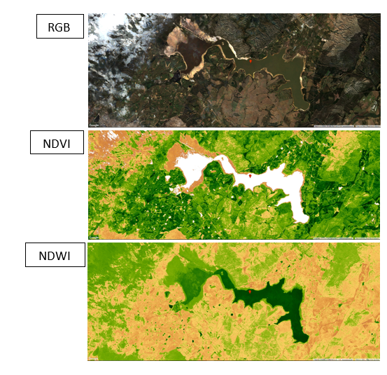
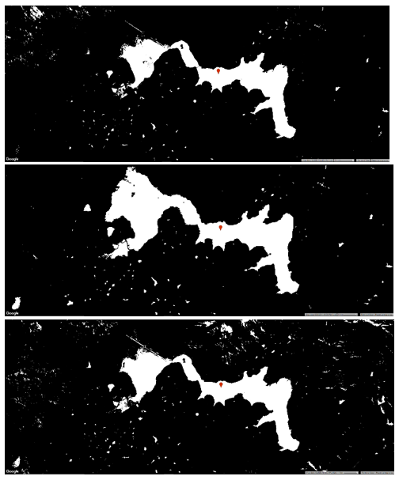

GOOGLE EARTH ENGINE FOR ECOLOGY AND CONSERVATION
Practical 2: Spectral indices, atmospheric interference, and water detection
Access the completed practical script here.
The end product

Learning ObjectivesBy the end of this practical you should be able to:
- Compute the Normalised Difference Vegetation Index (NDVI) and Normalised Difference Water Index (NDWI) using two different options.
- Interpret both the NDVI and NDWI layer.
- Use these two spectral indices to detect water.
- Understand the influence of atmospheric interference on reflectance and detecting water.'
- Calculate the area of water within a single region
Importing datasets
Import the Sentinel-2, level 1C data, and rename it s21c.
There are two ways to import data:
- Use the Image Collection name ("COPERNICUS/S2") and then give this collection a variable name (s21c).
var s21c = ee.ImageCollection("COPERNICUS/S2");
- Using the import button and then renaming the image collection (within the imports section). You can find the import button by searching for your image collection (in the search bar) and clicking on the imagecollection of interest. Thereafter, click on the 'Import' buttton in the bootom left.
Using either approach, import the level 2A product and rename it s22a. Lastly, add a marker on the Theewaterskloof dam.
Filtering data
Building from the previous practical where you imported and filtered Sentinel-2 data, we will repeat these steps.
var filtered = s21c.filterBounds(Theewaterskloof) .filterDate('2019-05-01','2019-08-14') .median();
Here, we compute a median image as opposed to selecting the first image or computing the mean image . A median image is a quick and easy way to find and select cloud-free pixels. The reason this works is because clouds have high reflectance values while shadows have low reflectance values. Therefore, by selecting a median image, cloudy and shadow contaminated pixels are generally avoided. However, if you are working in areas that are frequently under cloud cover this may not suffice and you would need to use a 75th percentile image instead of a median (50th percentile) image. Like other atmospheric interferences, clouds and their associated shadows are largely undesirable and should be removed prior to any analysis.
At this point, you have reduced an image collection for the period between 01 May 2019 and 14 August 2019 to a single median image.
Next, we will compute the NDVI and NDWI spectral indices. There are two ways to achieve this in GEE:
- Using the expression function- very flexible
- Using the normalizedDifference function - less flexible but more specialised.
var NDVI_1c = filtered.expression('(nir-red)/(nir+red)',{ 'nir': filtered.select('B8'), 'red': filtered.select('B4') });
However, if your spectral index is of the form ((band 1 - band 2)/(band 1 + band 2)). Then the normalizedDifference function is simpler to use.
var NDVI_1c = filtered.normalizedDifference(['B8','B4']); var NDWI_1c = filtered.normalizedDifference(['B3','B8']);
Visualisation
We will first visualise the RGB image (True-colour image). We centre the map on our point of interest and then add the image to the map for visualisation.
Map.centerObject(Theewaterskloof,14); Map.addLayer(filtered,{bands:['B4','B3','B2'],min:0,max:3000},'RGB');
We specify a palette to be used when visualising the indices. We can create a colour palette using strings (e.g., ‘green’, ‘red’) or we can use hex colour codes (e.g., 'FFFFFF', 'CE7E45'). The NDVI and NDWI spectral indices both range from -1 to 1. However, for NDVI we specify a minimum of zero to improve the visualisation of NDVI. This may not always be necessary.
var vis = ['FFFFFF', 'CE7E45', 'DF923D', 'F1B555', 'FCD163','99B718', '74A901', '66A000', '529400', '3E8601', '207401', '056201', '004C00', '023B01', '012E01', '011D01', '011301']; Map.addLayer(NDVI,{min: 0, max: 1, palette: vis},'NDVI'); Map.addLayer(NDWI,{min: -1, max: 1, palette: vis},'NDWI');
Interpreting spectral indices

Figure 2
Spectral indices take advantage of the spectral properties of land cover. For instance, as highlighted in the theory lecture, vegetation has a high reflectance in the Near-Infrared (NIR) region while having a low reflectance in the red portion of the electromagnetic (EM) spectrum. As a result of using these bands to compute the NDVI, the index corresponds to the greenness of vegetation and has been shown to be correlated to various vegetation parameters such as vegetation health, nutrient levels, and plant phenophase. Similarly, NDWI is mainly sensitive to water.
Detecting water
There are numerous methods available to detect surface water and this area of research is still active. In this course, you will be introduced to two of the approaches to detect landcover classes of interest i.e. supervised classification and thresholding. For this practical, you will use a very simple thresholding-based approach that employs the computed NDVI and NDWI spectral indices.
var water_1c = NDWI_1c.gt(NDVI_1c); Map.addLayer(water_1c,{},'water_1c');
In the above code snippet, the function gt() returns a 1 if the first value (NDWI) is greater than the second value (NDVI), creating a binary raster i.e. a value of 1 is returned when NDWI values are greater than those of the corresponding NDVI pixel. This inequality can be useful to detect open surface water. However, upon inspection, you will come across inevitable omission and commission errors.
The influence of atmospheric effects on water detection.
Recently, there has been a drive towards Analysis Ready Data (ARD). ARD includes data that has already been corrected for atmospheric interferences. However, there is a considerable amount of uncertainty and variance associated with the results of different atmospheric correction algorithms. This, together with the fact that atmospherically corrected Sentinel-2 data is not readily available on GEE for areas outside of Europe from 2015 (the start of the archive) to 2018 i.e. level 1C (atmospherically uncorrected) data is only available. Therefore, if you may consider using level 1C data for your analysis, you need to understand the potential problems associated with atmospheric uncorrected data. We will consider these atmospheric effects on water detection.
To visually explore the results of the atmospheric effects on water detection, we will repeat the code chunks above for the level-2A (atmospherically corrected) Sentinel-2 data.
var filtered = s22a.filterBounds(Theewaterskloof) .filterDate('2019-05-01','2019-08-14') .median(); Map.centerObject(Theewaterskloof,14); Map.addLayer(filtered,{bands:['B4','B3','B2'],min:0,max:3000},'RGB'); var NDVI_2a = filtered.normalizedDifference(['B8','B4']); var NDWI_2a = filtered.normalizedDifference(['B3','B8']); Map.addLayer(NDVI_2a,{min: 0, max: 1, palette: vis},'NDVI'); Map.addLayer(NDWI_2a,{min: -1, max: 1, palette: vis},'NDWI'); var water_2a = NDWI_2a.gt(NDVI_2a); Map.addLayer(water_2a,{},'water_2a');

Figure 3: The influence of atmospheric interference on the detection of water. Water detected from atmospherically corrected Sentinel-2, level 2A (top), reference water detection based on the long-term surface water from Landsat-8 made available through the Global Surface Water product (centre), water detected from atmospherically uncorrected Sentinel-2, level 1C data (bottom).
For the last component of this practical, we will calculate the area of the detected water deived from both the Sentinel 1C and 2A data.
To accomplish this, first add a bounding box around the Theewaterskloof dam by using the drawing tools. We will determine the area of water within this AOI. To achieve this we will first prepare the data by using the selfMask function to select all pixels with a value of 1 (water). Then multiply this by an image that contains the pixel area (10 x 10 aquared metres).
Once we prepared the water image we will then sum up the pixel values within the specified AOI. This will represent the area of water in squared metres.
Lastly, we print the area. You will see we
- Cast to number -Since earth engine needs to understand this as a number
- Convert to squared kilometres (by dividing by 1 million (1e6))- This is easier to interpret
- Round of to the nearest integer using the round function- The decimals provide unnecessary detail
var area_1c = water_1c.selfMask().multiply(ee.Image.pixelArea()).reduceRegion({ reducer:ee.Reducer.sum(), geometry:AOI, scale:10 }).get('nd') print('The area of water for TOA data (square kilometres):', ee.Number(area_1c).divide(1e6).round()) var area_2a = water_2a.selfMask().multiply(ee.Image.pixelArea()).reduceRegion({ reducer:ee.Reducer.sum(), geometry:AOI, scale:10 }).get('nd') print('The area of water for BOA data (square kilometres):', ee.Number(area_2a).divide(1e6).round());
Practical 2 Exercise
Repeat the steps in this practical for the Landsat-8 TOA and surface reflectance (BOA) image collections. Thereafter, visually compare the water detection results and patterns with the Sentinel-2 image results. Submit your final script.
To share your script, click on Get Link and then copy the script path. Send your completed script to email.